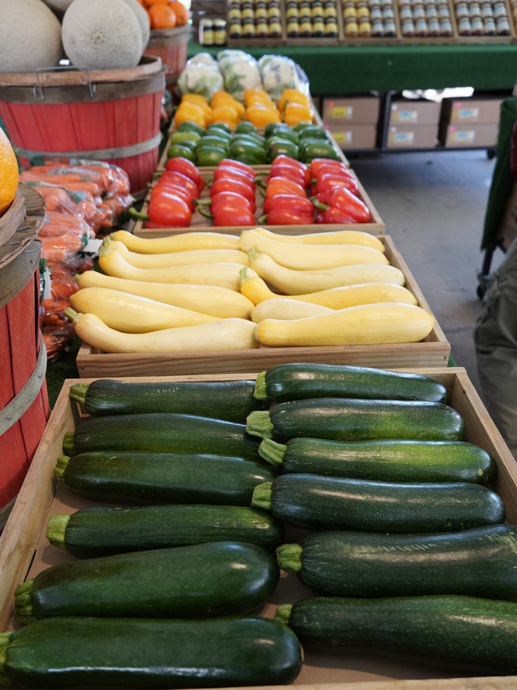
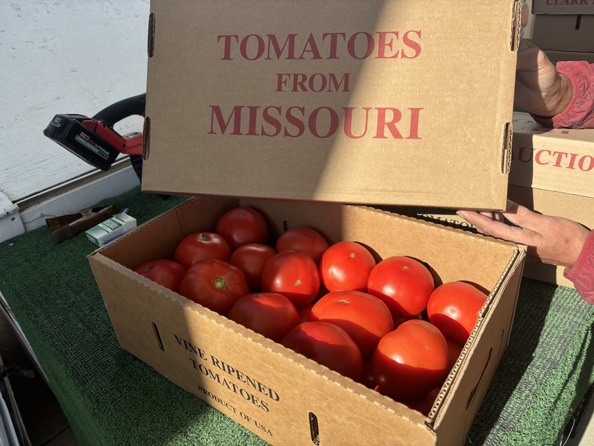
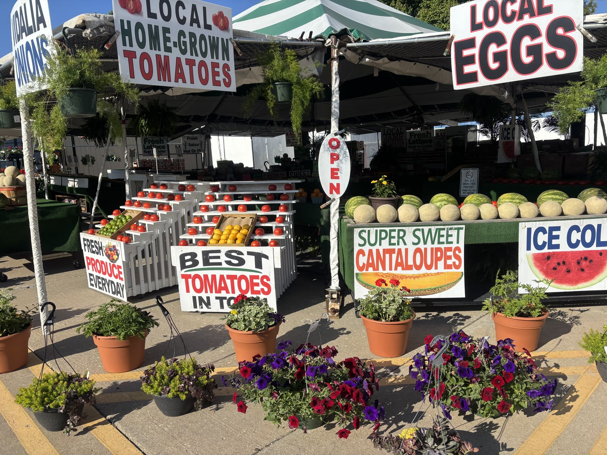
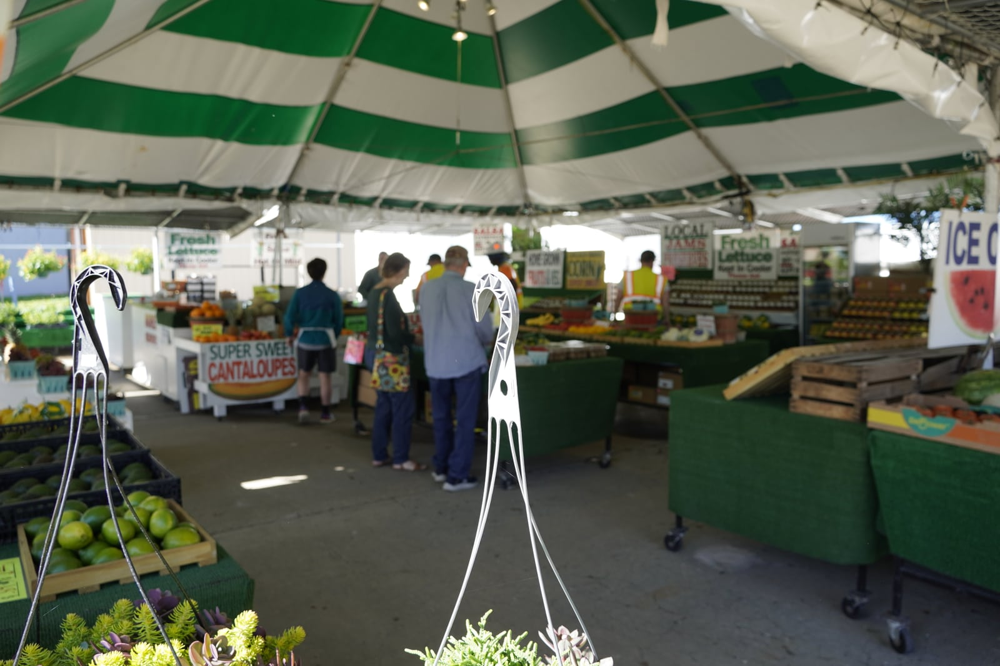

Fresh from Konrad
A few photos from this weekend
More red seeded watermelon came in, and the first green tomatoes are on the stand. Happy Mother's Day from Konrad.


Weekend update
Konrad just got in more red seeded watermelon and the first batch of green tomatoes. Flowers and plants are still ready for Mother's Day too.
Come by this weekend

About the stand
Konrad Pfeifauf grew up in Waldo, biking past a little fruit-and-vegetable stand near 75th and Wornall run by Frank DeLuna. In 1985, when Konrad was a kid, Frank offered him a job. He stayed through college at Mizzou, took a stretch abroad in Australia, then came back when Frank called and asked if he wanted to take it over. By the late 1990s, Konrad was running it himself.
The stand has moved with the neighborhood — from 75th and Wornall to 103rd, and now back home to 7300 Wornall in the heart of Waldo. Konrad still shows up every day of the season, samples the fruit, and hand-picks from local farmers and trusted distributors. When the tent comes down for winter, he runs a snow plow until it's time to open back up.

What's in season
Right now: more red seeded watermelon just came in, and Konrad has the first batch of green tomatoes. Flowers and plants are still ready for Mother's Day.
Seeded watermelon
More just came in.
Red, seeded, and ready for the weekend.
Green tomatoes
First batch is here.
Good for frying. Ask Konrad how ripe they are.

Strawberries
First flats of the season are in.
Eat them this week. They don't wait.

Asparagus & spring veg
In the cooler.
Asparagus, broccoli, cauliflower, head lettuce, romaine, green beans, green onions.
In the Cooler
What’s in the cooler
Updated regularly — stock changes daily.
Local free-range eggs, fresh salsa, and seasonal veg. Ask at the register if you don’t see it.

Pineapple, grapes, Honeycrisps
In every day.
Hand-picked. Ripe avocados too — check the tray.
Around the stand
Fresh from Konrad
More red seeded watermelon came in, and the first green tomatoes are on the stand. Happy Mother's Day from Konrad.





What folks say
"Amazing little find in Waldo! I'm so happy I stopped. Best blueberries and peaches I've had! Couldn't find better people working there. Definitely will be back."
"Konrad & Andrew are so cool & nice. This has been the perfect spot for me to get all my produce during my lunch break or after work. Big fan!"
"I've been going to Konrad's stand for 8 years now! They make sure everything is perfect and back it up. I especially love their strawberries, farm fresh eggs & sweet-hot salsa. The location is very convenient to my house and everyone on staff is so helpful and efficient."
Come see us
Hours
| Day | Open |
|---|---|
| Monday - Sunday |
Season
Open April through October. Follow on Facebook for the exact opening date each spring.
Contact